01
Choose an island.
Each subject is an island. Set 10 to 90 minutes and light the way.
An offscreen study RPG
Your focus sends
Wren into the fog.Every completed study session opens the map, a chapter, and something new at camp. Leave the phone down. Come back for the story.
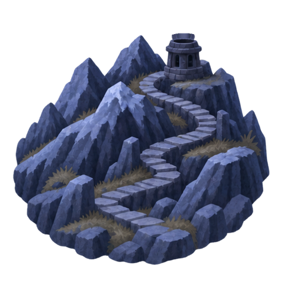
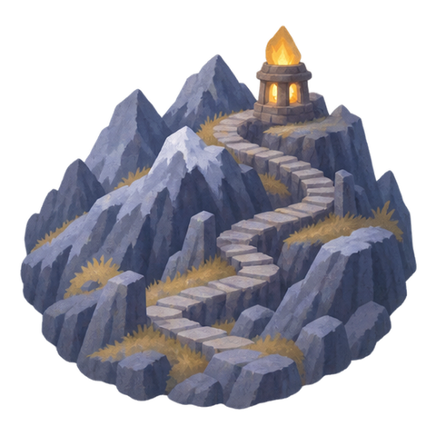
MathAshen Peaks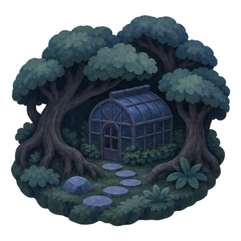
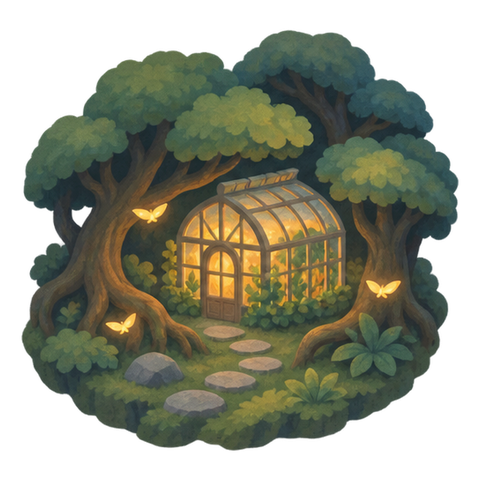
ScienceLumen Forest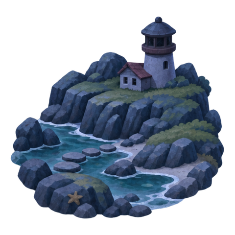
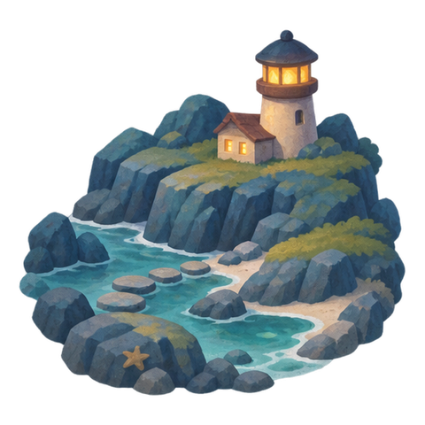
LanguagesWhispering Coast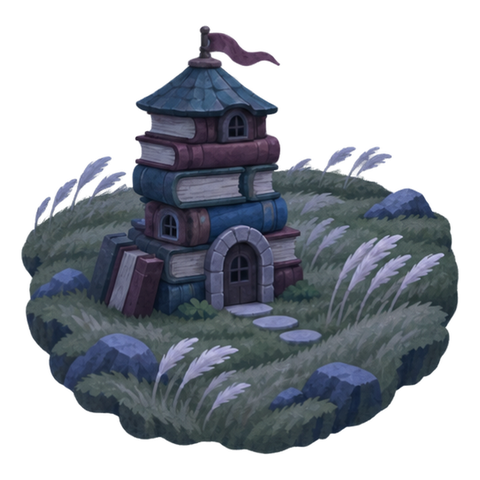
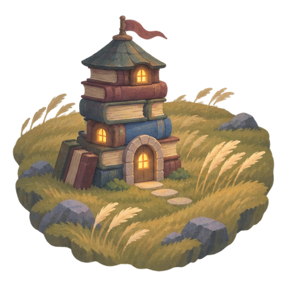
HumanitiesArchive Plains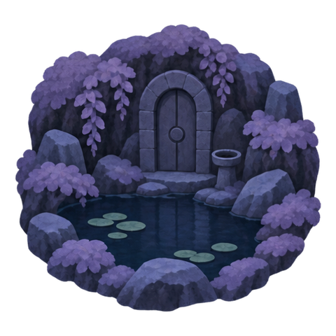
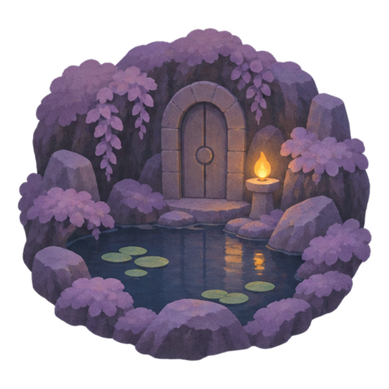
OtherQuiet Hollow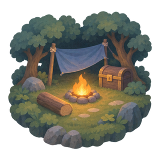
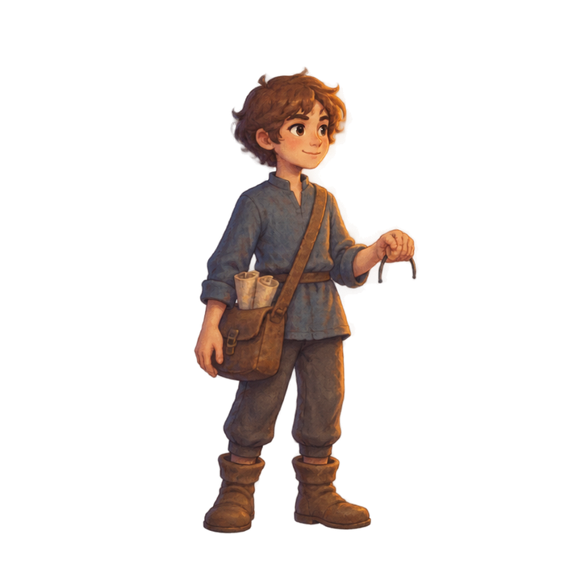
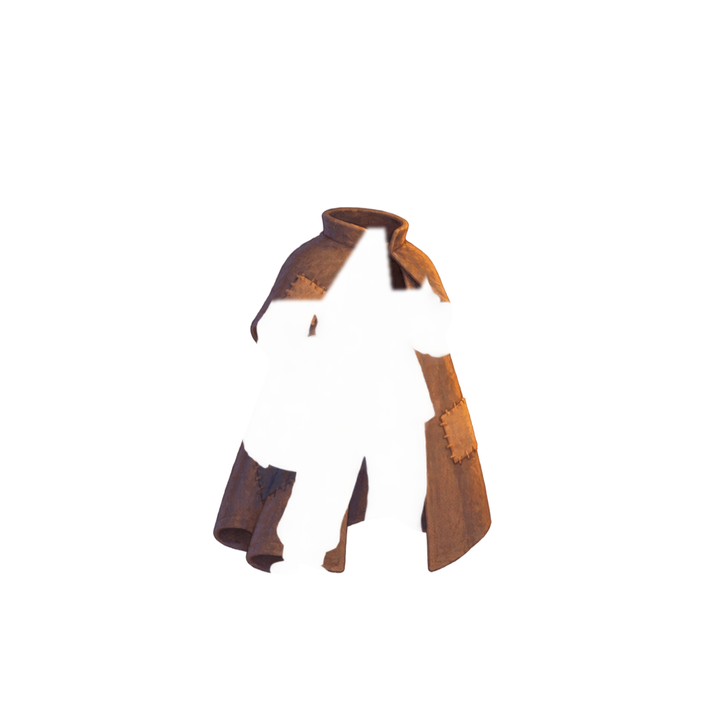
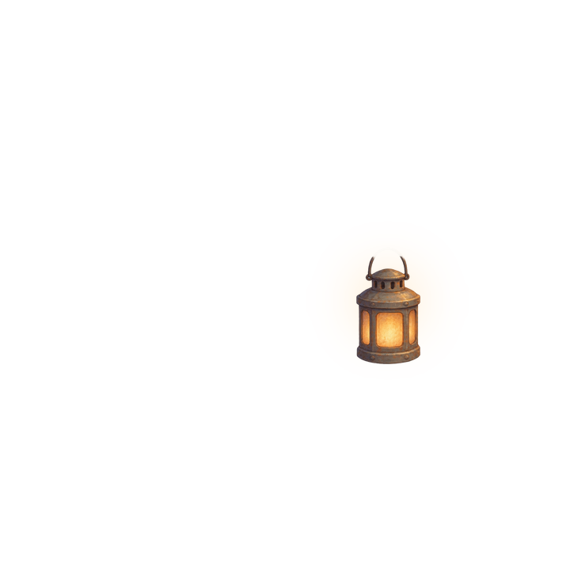
01
Each subject is an island. Set 10 to 90 minutes and light the way.
02
Distracting apps can stay dark through Screen Time, or you can just lock the phone. Leave for a real reason and the streak holds. Quit, and only this session goes unlit.
03
You read the chapter this session opened. Thirty chapters open by studying, not by paying. About a minute. Nothing else to do in the app.
Five islands. The one you study is the one that stays lit.
Math. Every step up the mountain is carved with a number.
Languages. Shells on the beach whisper in other tongues.
Science. In the greenhouse, light needs time, not fire.
Humanities. The archivist owl no longer remembers the books. He still listens.
Everything else. Art, music, reading, or a project with no other island.
Why the phone goes downLearning research, not a clinical claim: splitting attention while studying makes the work shallower.
Rosen et al., 2013 · May & Elder, 2018 · Chen et al., 2024 — not a claim that Lanternway raises grades.
The camp gate
Leave an email if you want to hear when the first walk opens. This page does not save it.
Nothing is sent.